Mercedes Ponte · por Vertra Estudio
Versión 1.3 · Actualizado 18 de junio 2026
Lo tuyo
Lo que está esperándote. Nada urgente al punto de hoy, pero cada cosa destraba algo. Tocá la que quieras y te lleva al detalle.
«El interiorismo, desde el primer plano» — el último que armamos, listo para filmar. Es lo primero ahora: arrancá por este.
Abrir el guion →Ya tenés cuatro páginas online: el hub de servicios y una página individual para cada oferta — Deco Coaching, Proyecto de Interiorismo y Casas para refaccionar y vender. Necesitamos que revises los textos, los precios y lo que querés desarrollar en cada una.
Abrir la página de Servicios →El 01 ya está grabado. Faltan el 02 y el 03 — los guiones ya están escritos en tu voz y listos.
Abrir los guiones →Junio 2026
Lo que está sobre la mesa este mes. A la izquierda, lo que ya está en marcha; a la derecha, lo que espera tu sí para entrar a producción.
El interiorismo, desde el primer plano
Guion listo · cámara + B-roll · CTA HOGAR · el próximo a filmar
Trilogía de bebés
01 grabado · faltan el 02 y el 03
Reels de ventas
Nuevos · exclusivos para Meta Ads, no van al feed
Ver lo que nadie ve
Primer case study real · terminado
Segundo reel del proyecto
Fotos elegidas · falta definir el ángulo nuevo (no repetir el antes-después)
«La casa antes de la casa». Los cuatro guiones están esperando tu revisión.
18 El plano que aprobás define quién vas a poder ser ahí adentro 19 Hay decisiones que se toman antes de levantar una pared 20 Tu arquitecto te resuelve la estructura. ¿Quién pone la voz del cuerpo? 21 Una casa no resuelve la vida que llevás. Diseña la que vas a llevarDetalle
Los cuatro frentes abiertos del proyecto, con su avance de un vistazo. Tocá cada uno para ver el detalle.
Última revisión · 7 de mayo 2026
En vivo
El proyecto vive en dos lugares. Uno es tu cara hacia afuera; el otro es donde trabajamos juntos.
Tu carta de presentación: proyectos, el Método REFUGIO® y la nueva sección de servicios con cuatro páginas individuales.
mercedes-portfolio-ok.vercel.app ↗El detrás de escena: este panel, los guiones, el plan de contenidos y las historias. Lo abrís desde el celu.
mercedes-guiones.vercel.app ↗El recorrido
De dónde venimos. Los hitos del proyecto hasta hoy.
Primer trimestre de reels y carruseles, ejecutado.
Arranca el manejo de campañas de Meta para la cuenta.
Definimos cómo hablás en los reels y que tu cliente prioritario es el que diseña desde cero.
Tres reels de presentación llevando gente a tu perfil.
Cuatro sagas de contenido, el banco de historias y la trilogía de bebés reescrita en tu voz.
Portfolio nuevo + la página del Método REFUGIO®.
Un solo lugar para ver todo el proyecto y saber por dónde vamos.
Hub de servicios + Deco Coaching + Proyecto de Interiorismo + Casas para refaccionar y vender. Estás acá.
Tu plan
Incluido en tu plan · todos los meses
Todo esto entra en tu fee fijo de U$S 400.
Fuera del plan · este mes
Sin cargoLos proyectos por fuera del fee se cotizan aparte, según cada proyecto.
Administración
El servicio de mayo ya está saldado. Acá queda el comprobante y los datos para las próximas transferencias — el CBU y el alias se copian con un toque.
PagadoU$S 400 Servicio mayo 2026 Pagado Contenido + Ads · servicio de mayo saldado. Tocá para ver el detalle. →